Why preventing hotspots of transmission is key to stopping the COVID-19 pandemic
30 October 2020

 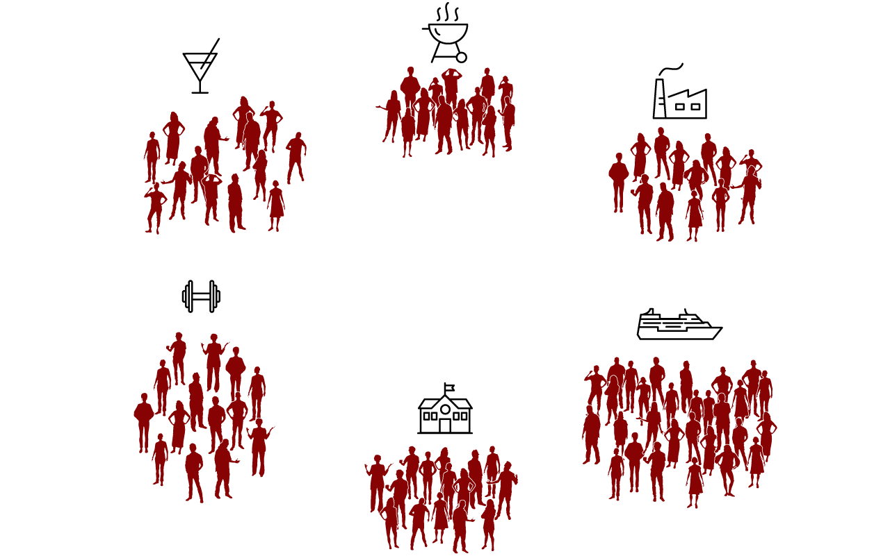
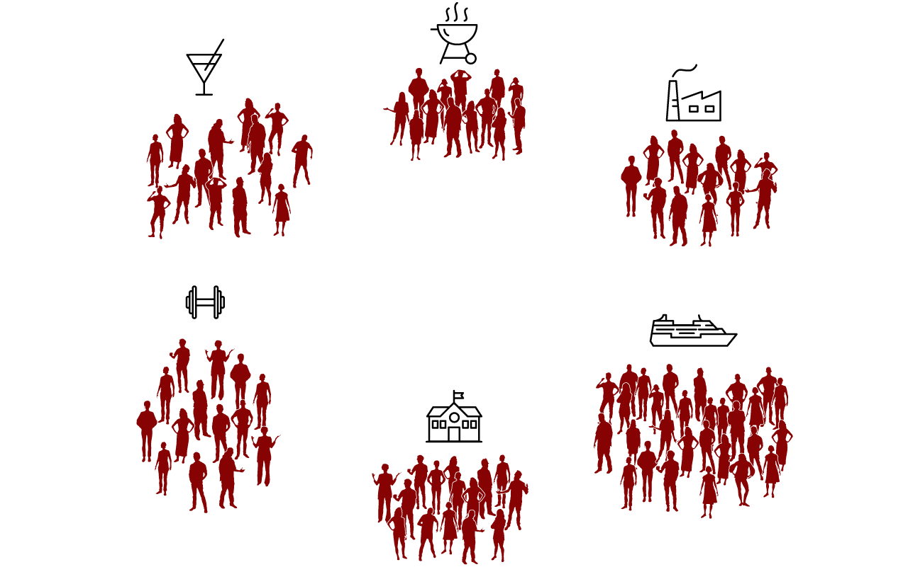
 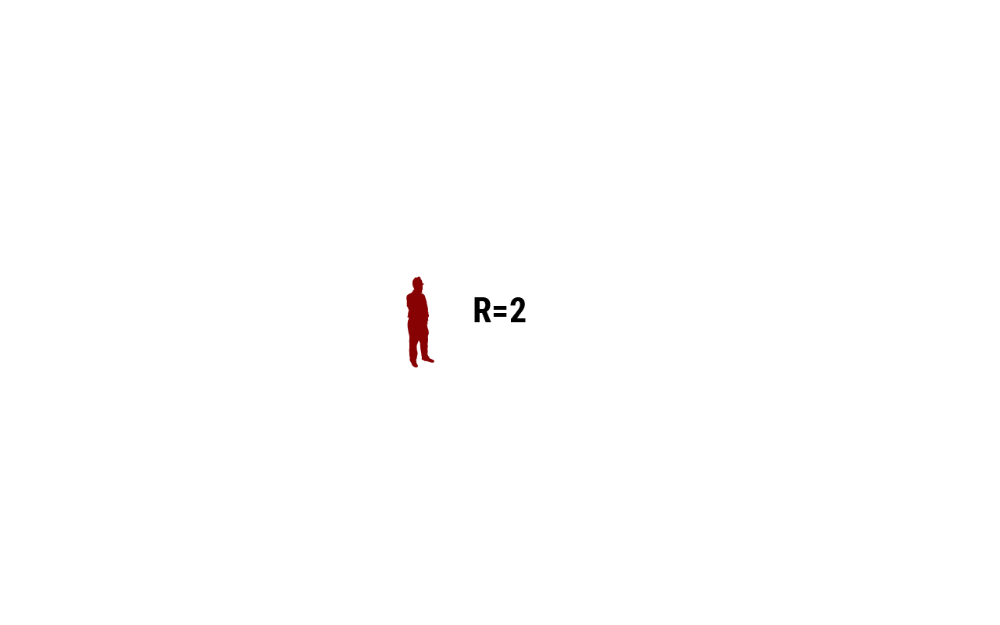
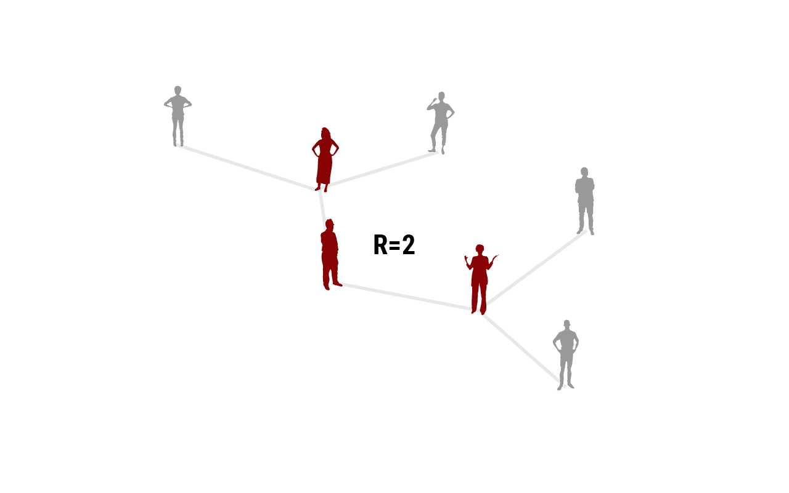
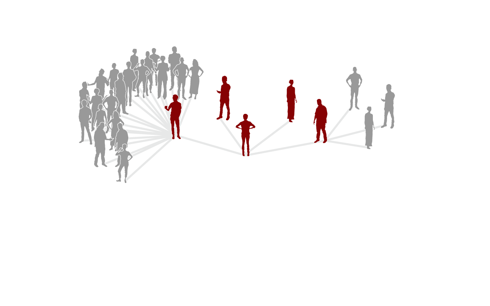
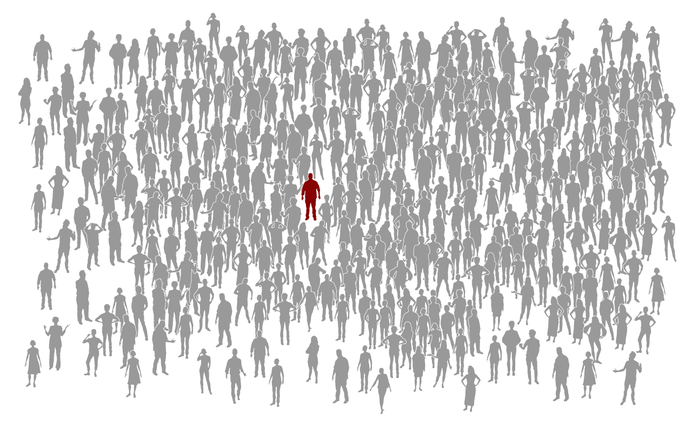
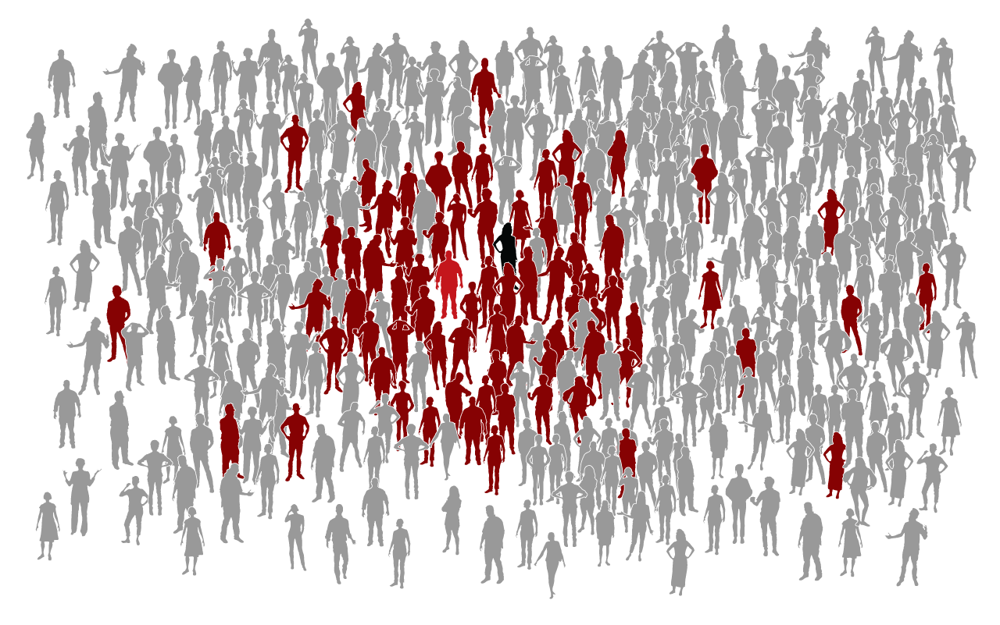
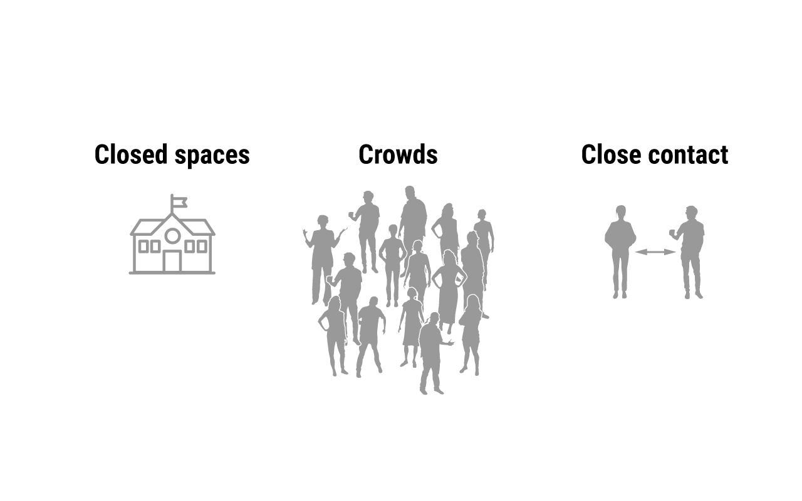
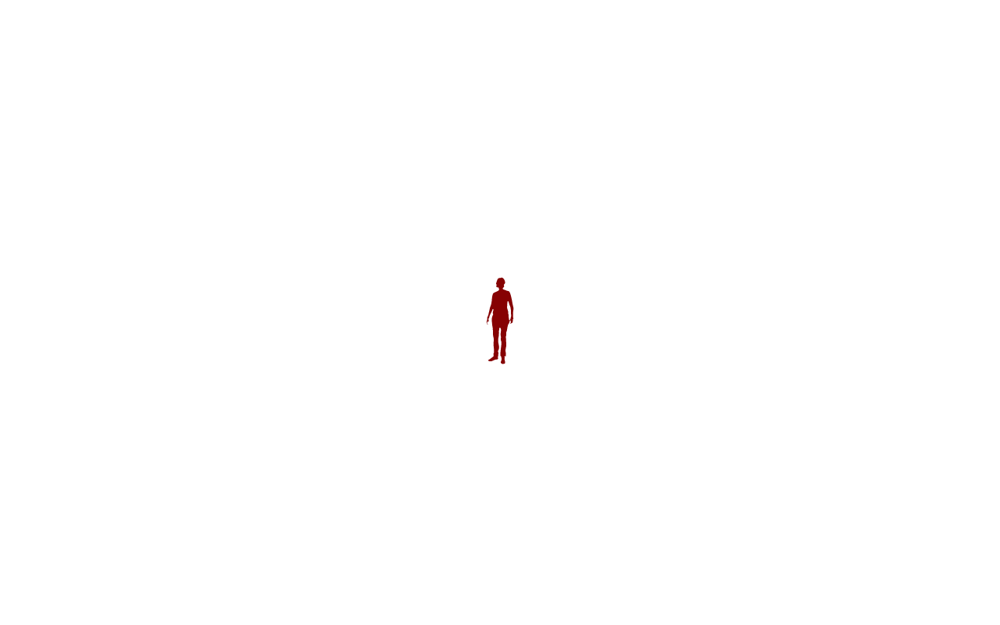
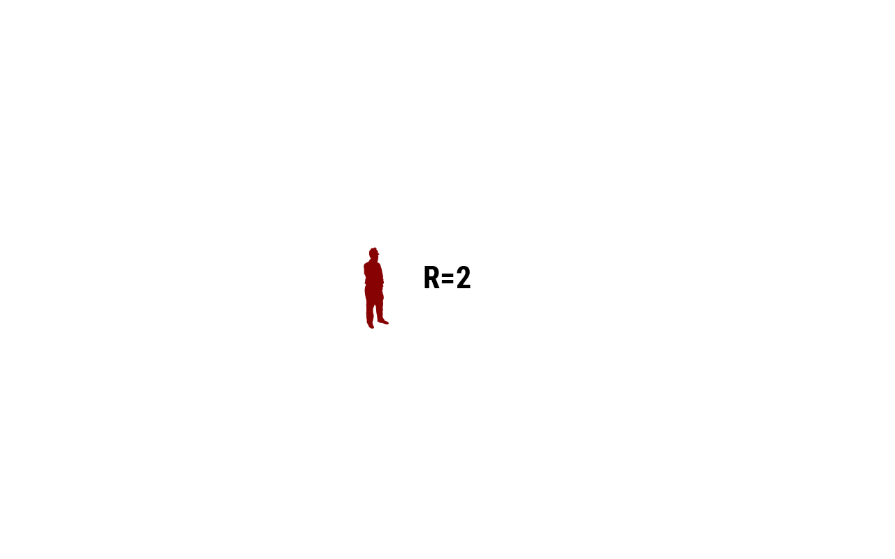
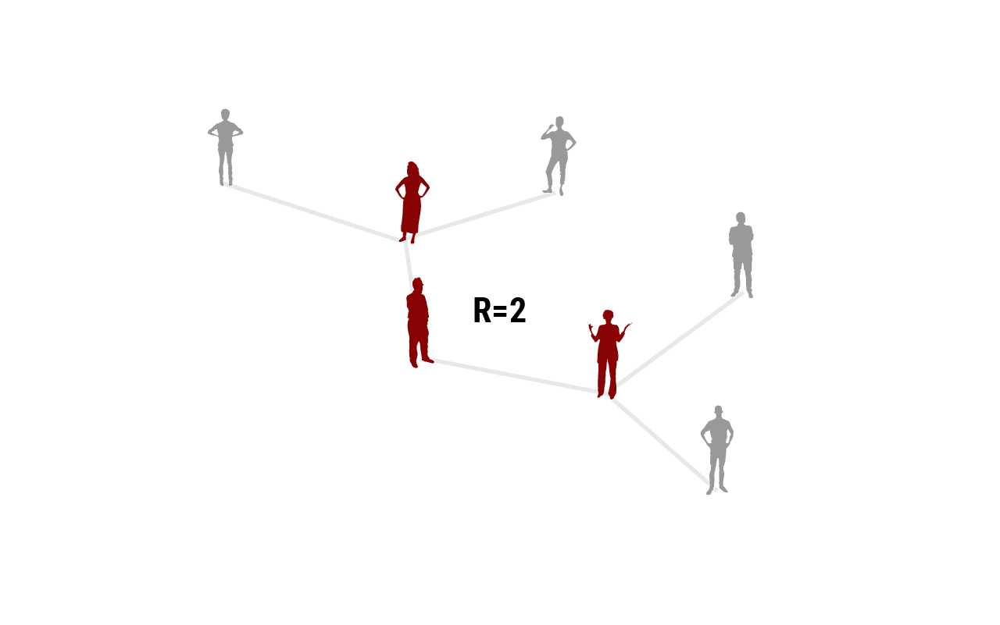
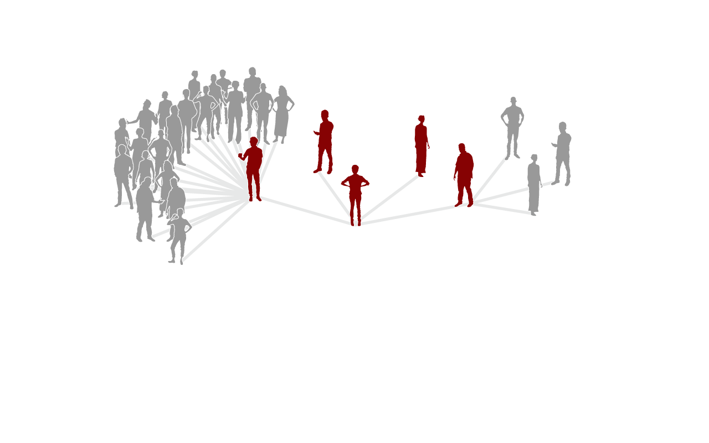
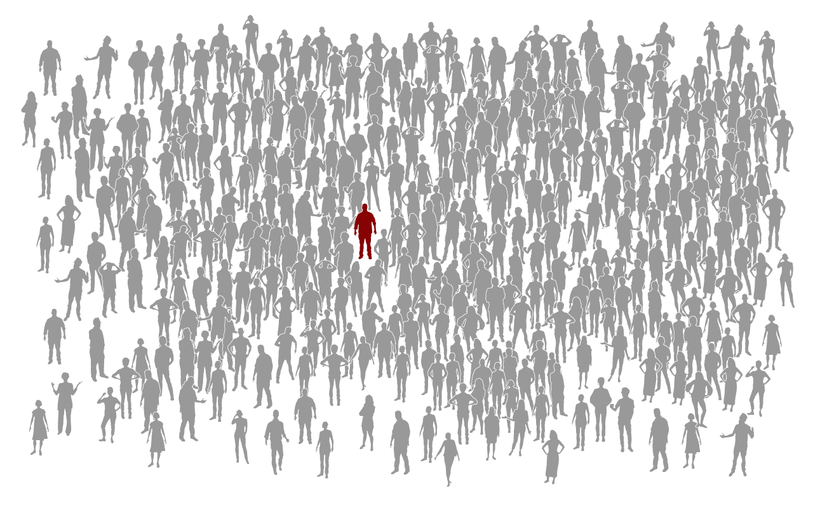
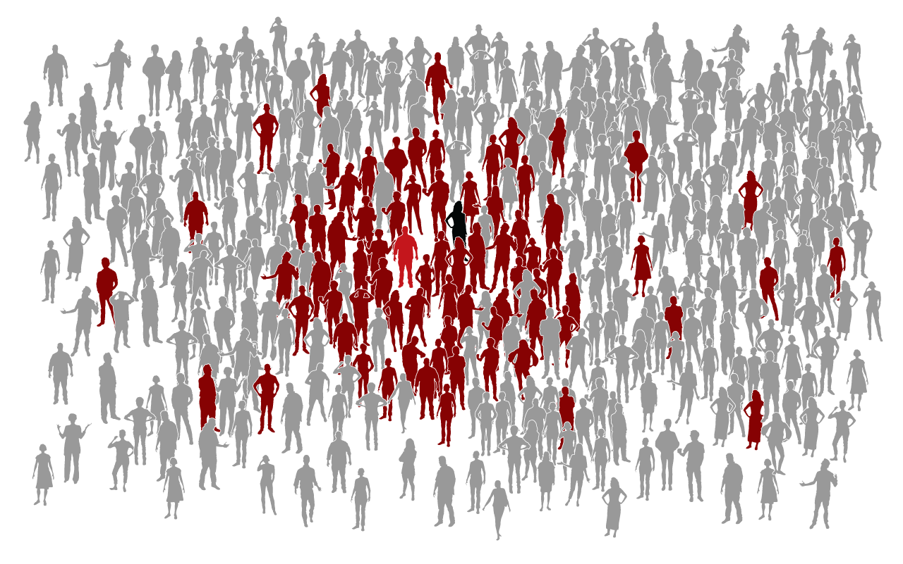
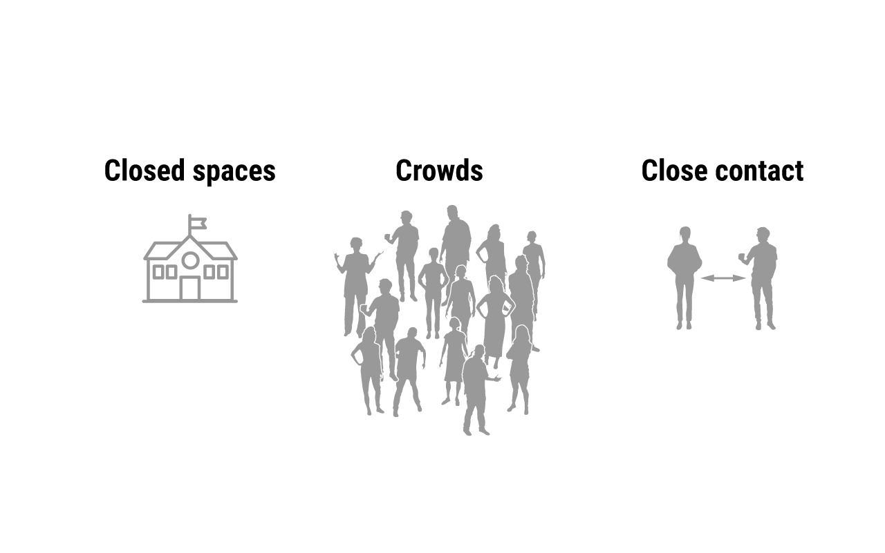
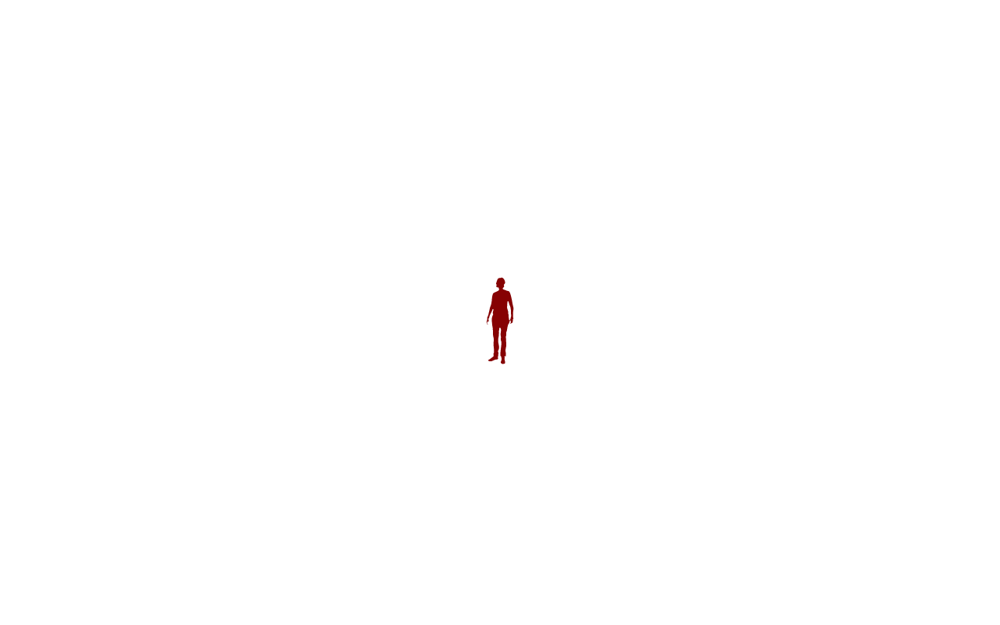
In late February, drug company Biogen held its annual conference in Boston. The United States had fewer than 20 known COVID-19 cases at the time. But one of the roughly 200 attendees must have carried the virus.
It triggered a big outbreak. At least 97 people who attended the conference, or lived in a household with someone who did, tested positive.
The Biogen meeting had become a superspreading event. Eventually, the virus spread from the meeting across Massachusetts and to other states. A recent study estimates it led to tens of thousands of cases in the Boston area alone.
COVID-19 superspreading events have been reported around the world. They happen in all sorts of places: bars and barbecues, gyms and factories, schools and churches, and on ships.
And even at the White House.
But why do these disease clusters occur—and why are they so important?
COVID-19 and many other diseases transmit from person to person. The reproduction rate, R, determines how fast a disease can spread.
R denotes the number of people infected, on average, by a single infected person. If R is 2, the number of cases doubles in every generation: from one infected person
to two
to four, to eight, and so on.
Real life isn’t that neat.
One person may infect four people.
Two of those may not transmit the disease to anyone else. One might pass it on to three others, and the fourth one may infect 21 people.
Of those 21, many may not pass the virus on to anyone else. But perhaps one will pass it on to 18 others.
And so on.
In COVID-19 and many infectious diseases, most people don't infect anyone else. A small percentage of people cause most of the transmission.
How strong this pattern is depends on the disease, but superspreading appears to be particularly important in COVID-19. A study published in April estimated that 10% of patients are responsible for 80% of the spread.
A study from India published in Science last month concluded that 8% of infected people caused 60% of the secondary cases; 70% of people did not pass the virus on to anyone else.
A March wedding in Jordan was another tragic example of the dangers of superspreading. The father of the bride was infected; he passed the virus on to at least 76 of about 360 guests, a study says. One woman died.
If a small minority of cases leads to most of the spread, then stopping these people from transmitting should bring the pandemic under control. But how?
One key strategy is to eliminate the conditions that favor superspreading. Researchers have identified several factors that make superspreading events more likely, known in Japan as the three Cs: closed spaces with poor ventilation, crowds, and close contact settings. Shouting, singing, and heavy breathing also seem to increase the risk of superspreading.
Paying attention to superspreading events is also important for contact tracing.
If you find out someone has COVID-19, you can trace their contacts and test or quarantine them. But there is a high likelihood they didn’t infect a single other person.
However, there is a high likelihood that person became infected at a superspreading event.That’s why contact tracers in some countries now spend more time understanding where someone was infected and finding other people from the same cluster.
This is called backward contact tracing. It can help find more chains of transmission.
Backward contact tracing also helps scientists better understand where superspreading events happen. That may help prevent more such events in the future.
Producer and Graphics Editor: Nirja Desai
Supervising Producers: Alberto
Cuadra, Beth Rakouskas
Web Developers: Xing Liu, Elbert Wang
Design Editor: Marcy Atarod
Editor: Tim Appenzeller
Illustrations of people by
ProPublica's Weepeople font